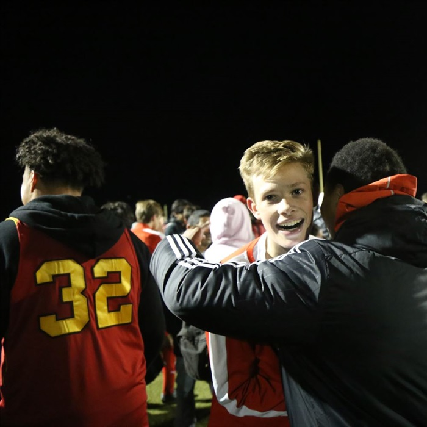

Khan Academy is a fantastic resource that provides a free curriculum that teaches
students the basics of many different subjects, including math, most sciences, and computer science. They
also offer a simple SAT study program with full length tests, selected practice questions, and helpful test taking
strategies
Founded in 1995 at the University of California, Berkeley, the Peoples Test
Preparation Service(PTPS) is a non-profit, student-run organization dedicated to providing standardized test
taking skills to urban communities. They strive to provide free SAT prep services to high school students
in the East Bay area. Make sure to enroll before their various deadlines!
This resource is essentially the equivalent of hiring a top notch tutor for an hour and
a half. For 90 minutes, users get nonstop, useful information about how to do well on the SAT.
Of course, practice is the best form of preparation for any test. Here we've
provided links to several full-length practice tests for both the SAT and the ACT
The ACT official website provides extensive test taking advice for each of the ACT's five components
as well as scores of specially selected practice problems.
Seeing as we are only 3 high school students, we are very limited in both our resources and
abilities. Your donation will enable us to outsource some of our tasks and better our ability to affect change in our community.
We are a group of three Berkeley High students who feel that not everyone is given equal opportunities to show their strengths
to colleges of their choice. We have firsthand experience in field of standardized tests and feel that it is important for
everyone to have equal chances in the admission process.

My name is Philip Dierks and I am a junior at Berkeley High. I am a member of Berkeley High's Link Crew, a tutor and, and a varsity soccer player.
I also am experienced in the process of standardized testing. Therefore, I believe I am a valid contributor to the solution to the problem. Everyone deserves to
have an equal chance to go to college.
I am Andrew Simpson and junior at Berkeley High School. I am a rower, and am hoping to row in college.
Among the many obstacles in the college admissions process, standardized testing is the most daunting.
That is why I would like to make the process more simple for students like myself.
My name is Jacques Otis Xavier Ackerberg Lybarger-Martel. I'm the product of a social experiment, a junior at Berkeley High School,
a varsity debater, an ex-soccer player, a current rugby player, and a veteran test taker. I'm lucky enough to have
parents that can afford to buy me Barron's books and even SAT tutors, but I grew up with
many kids who are not so fortunate. I am passionate about closing the achievement gap because it is not fair that I
will probably do better than them on standardized tests just because I did better in the birth lottery.
Statistics
Every year, students hailing from poorer economic
backgrounds do significantly worse on nationwide tests like the ACT, SAT and AP tests
These pie charts represent surveys we took at the poorest high school
in our area, Richmond High. 75 students were surveyed.
OUR PHILOSOPHY
Here at College 4 All, we believe higher education is something that should be equally accessible
for all. we have dedicated our selves to closing the gap between the test scores of different income groups.
To learn more about the achievement gap click the STATISTICS button.
OUR MISSION
We at College 4 All aim to connect students from low socioeconomic backgrounds to helpful resources
that they ordinarily wouldn't have access to. We also provide a philanthropic platform where those with means can
donate to other programs that can help students from lower income families. To make a donation click the DONATE button.
PLANS FOR THE FUTURE
In the future we hope to develop our own programs that students can access on our website or on our app.
We will still continue to direct students to other helpful resources, but we feel some homegrown, tailored study plans is
the best way to help students shrink the achievement gap.